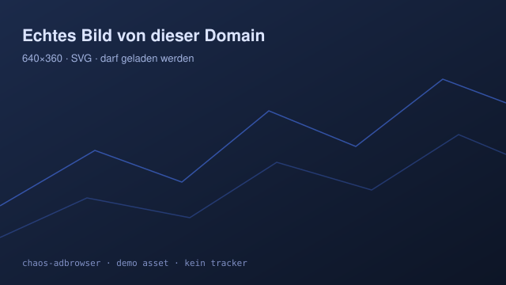

Warum ein Browser mit eingebautem Adblocker schneller ist als einer mit Erweiterung
Diese Seite ist Absicht: Sie ist voll mit Werbung, Trackern, Consent-Walls und Auto-Play-Overlays.
Alles davon stammt von Hosts, die in jeder gängigen Filterliste stehen — googlesyndication.com,
googletagmanager.com, taboola.com, pubmatic.com — und läuft hier
trotzdem nur ins Leere, wenn der Proxy dazwischengeschaltet ist.

display:none setzen.Der wichtige Unterschied zu einer Erweiterung: Ein Proxy entscheidet vor dem ersten Byte. Die Anzeige wird nicht gestartet und dann weggeblendet, sie wird nie angefragt. Das spart Requests, CPU auf dem Gerät und — bei mobilen Verbindungen — Datenvolumen. Messbar wird das hier unten im Selbsttest-Block.
„Wer Werbung entfernt, nachdem der Browser sie geladen hat, bezahlt zweimal: einmal mit Bytes, einmal mit Jitter.“
Zwischenstand
Wenn du diesen Absatz lesen kannst, ohne von einem Cookie-Banner angeschrien zu werden,
arbeitet der Filter. Der Banner unten ist #onetrust-consent-sdk nachempfunden und
steht auf der Abschussliste der Annoyance-Liste.
Formulare & Cookies
Das Formular schickt einen POST durch den Proxy an unsere Echo-Strecke.
Die Antwort listet alle Header, die der Server wirklich gesehen hat — inklusive der Cookies aus
der Session, die das Seiten-JS geschrieben hat.
Live-Nachladen per fetch()
noch nicht getestet
| Ressource | Erwartung | Ist |
|---|